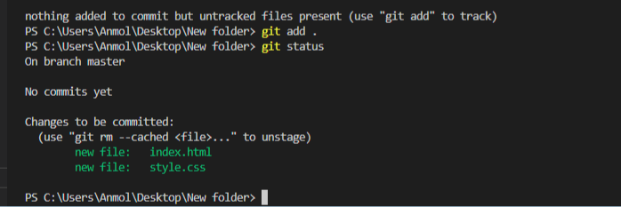

The git init command creates a new Git repository. It can be used to convert an existing, unversioned project to a Git repository or initialize a new, empty repository.
The git status command displays the state of the working directory and the staging area.
The git add command adds a change in the working directory to the staging area. It tells Git that you want to include updates to a particular file in the next commit.
Git clone is primarily used to point to an existing repo and make a clone or copy of that repo at in a new directory, at another location.
The git commit command will save all staged changes, along with a brief description from the user, in a “commit” to the local repository.
Use git push to push commits made on your local branch to a remote repository.
Pull requests let you tell others about changes you've pushed to a branch in a repository on GitHub.
The git remote command lets you create, view, and delete connections to other repositories.
The git branch command lets you create, list, rename, and delete branches.
The git checkout command lets you navigate between the branches created by git branch .
\When you select the Squash and merge option on a pull request on GitHub.com, the pull request's commits are squashed into a single commit.